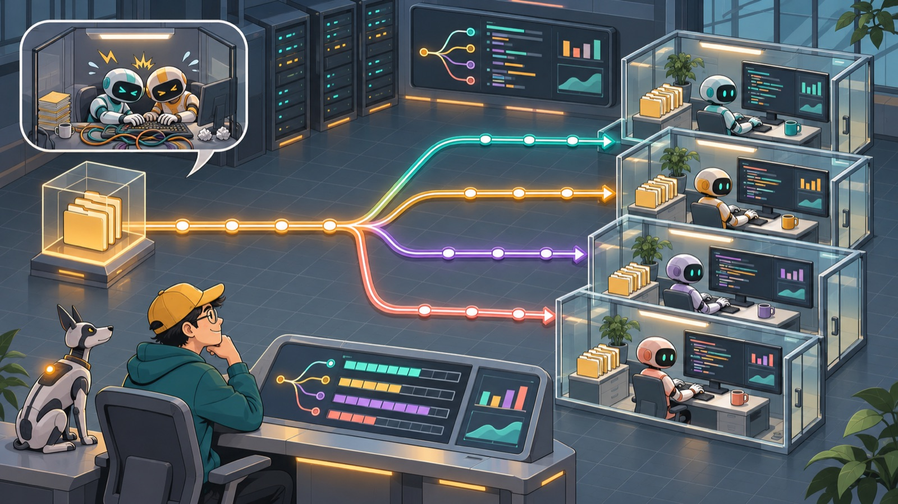
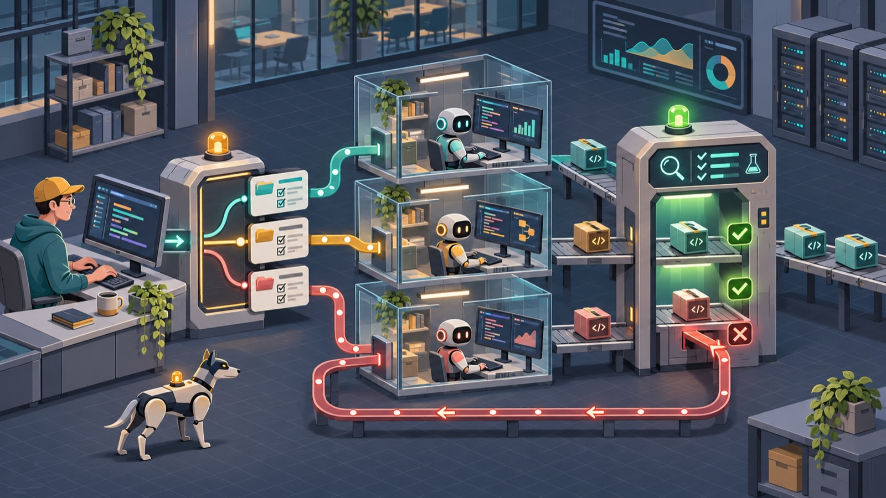
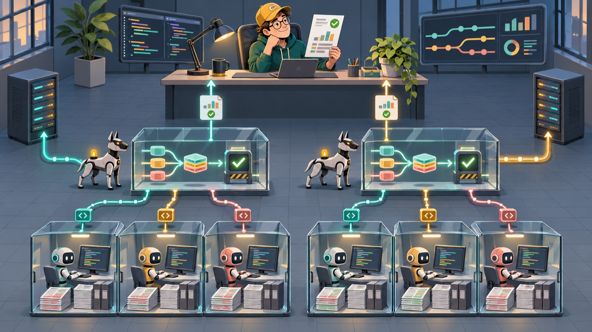

一个 agent 一个终端
更早 · 没有记录
- 卡在哪
- 人盯着一个 agent 干等。agent 干活时人闲着，agent 等人审批、等人回话时它闲着。两边轮流发呆，一次只推进一件事。
- 怎么改
- 还没改，这是起点。大家都这么开始的。
- 效果
- 人的注意力就是吞吐量的上限。
← 图比屏幕宽，可以左右滑动 →
技术架构与流程说明 · 11-19 更新
把“一个人盯一个 agent”，变成“人只提需求、看一页汇报、拍板”。离开电脑，在飞书里也一样。
drover 是一套多 agent 派发体系的名字，也是它的命令（/drover、$drover）和 CLI（drover）的名字。名字取“赶牧群的人”的意思，和它脚下的终端牧场 Herdr 配成一对。分析、拆条目、派发、追踪、验收、集成，都交给一个编排者（orchestrator）和一群 worker；人只在开头说一句需求、在中间偶尔拍个板、在最后看一页汇报。
整份文档只有一条主线：提效，打破人的瓶颈。下面每一次演进，都是把一件原本必须由人盯着做的事，挪给流程、脚本或者另一个 agent。后来人连电脑都不用守着了（飞书 oncall），结论到你手里之前先过一遍审（不用你一条条追问依据）；最新的一步是任务看板：几个任务各走到哪、在等谁、要你做什么，扫一眼就知道。
主工作台里的那个会话，就是你打交道的 drover 本身。负责路由、问答、审核、转达：只读每个任务的一页 rollup，方案和结论先按 rollup 里的依据审过再转。
orchestrator，一个任务一个，全程编排这个任务，跑在 herdr 的 orch workspace 里。拆条目、派 worker、验收、集成、推送。
一个条目一个 agent 一个 worktree。只干活、跑相关测试、写报告，不提交、不 rebase。
演进史
九个阶段，每一步都在回答同一个问题：现在人卡在哪？先看全景，再逐个展开。
← 图比屏幕宽，可以左右滑动 →
下面每个阶段都配一张架构演进图，讲清楚“这一步多了什么”；①–⑤ 和 ⑦ 另有一张插画讲故事，⑥ ⑧ ⑨ 没有。九张演进图用同一张底图，组件的位置固定不动，逐阶段往上加。
更早 · 没有记录
← 图比屏幕宽，可以左右滑动 →
09-17 装上 herdr 技能
working / idle / blocked / done 状态。agent 自己也能用 herdr CLI 开 pane、起 agent、读别的 pane 的输出。← 图比屏幕宽，可以左右滑动 →
09-17 之后到 10 月（具体日期没记录）· 10-20 装上 Herdr 的 Codex hook

~/.herdr/worktrees/<仓库>/…；依赖在 worktree 里独立安装，不软链源仓库的 node_modules / .venv。Codex 的 pane 装上 herdr 的状态 hook 后，也能报 working / idle / blocked。← 图比屏幕宽，可以左右滑动 →
10-23 最早一条派发记录 · 11-02 / 11-03 脚本化

/dispatch 命令（流程）和一个 dispatch 脚本（Python 标准库，每个子命令输出一个 JSON），这个脚本就是现在 drover CLI 的底子：
wt 建 worktree，deps 独立装依赖，agent-start 起 claude / codex 并自动处理信任弹窗；brief 按固定模板拼任务书，完成证据必填；watch 在状态变化时输出 EVENT；accept 按证据验收：重跑验证命令，用 code-review-graph 建图看风险和没有测试覆盖的函数；--review 才做）；history 把历史派发记录当记忆。← 图比屏幕宽，可以左右滑动 →
11-03 · 11-04 细化、起名 drover
drover orch-start，在 herdr 的 orch workspace 里一个任务一个 tab），往上只交一页 rollup.md（不超过 40 行），不转贴 worker 的原始报告。11-04 起名 drover，派发脚本从此就是 drover CLI。← 图比屏幕宽，可以左右滑动 →
orch-start --parent，它也只交 rollup。heavy 重命令排队锁（11-18 起改成按资源调度，见结尾）；accept --verify-baseline 和基线比失败集合；watch 认出“agent 在等后台命令”（waiting-background）。11-05 起，主会话和编排者也能跑在 Codex 里（orch-start --kind codex）：流程正文只写一份，宿主不同的做法见宿主差异；CLI 同时多了 orch-status 和 watch --until-event，给没有 Monitor 的宿主用。
11-06
drover：一条 ./install.sh 入口（先查 git、python3，缺 herdr 时可以替你装），后面是 install.py（Claude Code / Codex，link / copy）、README 和这份文档。CLI 从 ~/.drover/config.json 读主工作台和仓库目录，不再写死本机路径。打包时名字也统一了：入口都叫 drover（/drover、$drover、~/.drover/bin/drover），装好的东西都在 ~/.drover/ 下，herdr 里放编排者的 workspace 叫 orch。← 图比屏幕宽，可以左右滑动 →
waiting-background，也漏了。cd <目录> && git … 会触发 Claude Code 内置的强制确认：不走白名单、没有 “don't ask again”，每条都要人批。子代理看不到规则，最爱这么写。rollup:<状态>；api-error 只认最后一个输出块。drover wrapup 收集推送记录、远端核对、迁移和配置文件、整体检查结果，编排者补全成 wrapup.md 再清理；几个任务一起收尾，主会话合成一张总表。orch-status 多了按屏幕修正的 screen_status 和顶层的 blocked 列表。~/.claude/settings.json 加一个 PreToolUse hook，拦下 cd … && git …，把 git -C <目录> … 的改法回给 agent，让它自己改写重试；对子代理也生效，hook 自己出错一律放行。11-08
--oncall），在插件配置目录写一个 drover.env；在终端里装完当场问一句要不要用飞书扫码配对。drover，插件只在主会话需要你时推：它的确认框、你在飞书里提问的那一轮的回答、以 【转达】 开头的转达。编排者和 worker 的确认框由上一层批，卡 5 / 10 分钟没人批才升级到你。[飞书] 前缀送进主会话，和你在终端里说的话一样处理。~/.drover/oncall-images，在原来的位置换成一行 [图片] <本机路径> 和文字一起送进去，主会话自己打开看。← 图比屏幕宽，可以左右滑动 →
drover，赤陶色），只在主会话需要你时推：确认框、飞书提问那一轮的回答、以 【转达】 开头的转达；虚线是它盯着 herdr 里的编排者和 worker，卡 5 / 10 分钟没人批才升级。你在飞书里直接发的消息加上 [飞书] 前缀送进主会话。CLI 多了 oncall（配对、开关、看状态）和 main-register（登记主会话）。11-11 根治三问 · 11-15 转达前先审、证据有定义 · 11-16 现象要带原因
drover prompt 打回编排者补；打回两轮还不过才转给你，并写明哪几条没核实。← 图比屏幕宽，可以左右滑动 →
drover prompt 打回去补（还是走往下那条线）；人只拍板，不用追问依据。11-18 · 11-19 · 一键收尾、自动更新
/clear 之后就分不清了。update，规则变了还得 /clear。watch --main 自动盯所有顶层编排者，只报未读的 rollup（等你决定 / 完成 / 受阻 / 需要换编排者）、确认框、接口错误、意外退出、停了 N 分钟没更新、herdr 连不上，还有 drover 自己的更新；working、进行中都不报。哪份 rollup 读过由 drover 记（主会话用 drover rollup 读了才算），报过的事件记在磁盘上，重挂、/clear 之后都不重报。Claude Code 的主会话用后台 Bash 挂 --until-event，只在有事时退出、叫醒它（实测挂 35 分钟，只在退出时叫醒了一次）。drover board：一个状态一张表（等你 / 进行中 / 完成），一行一个任务，列是 任务（中文标题）| 当前状态 | 要你做什么 | 状态持续 | 代号，完成那张多一列收尾，提醒写在那个任务下面。终端里问进度，给 Markdown 表格；飞书里发“看板”“进度”，给 --plain 纯文字，按手机一屏排好；看板 tab 里是 --live。board --tab 在主会话旁边开一个同级 tab，tab 名就是汇总（比如“看板·等你2·完成1”），每 15 秒重画；表比终端宽时能左右滚，按住拖动选中、松开自动复制。timeline.jsonl 里。board --pending 的输出，推到手机的每一条都带着全部待定的事，前面的不会被后面的冲掉。watch --main 报一行 drover updated，主会话跑 drover rules 把改动读进来，不用 /clear；看板 tab 自己换成新代码。/clear 之后，之前挂着的 watch 报 session-restarted，新对话自己接上。被本地改动挡住、连续 24 小时连不上更新源，各报一行；在 ~/.drover/config.json 里写 "auto_update": false 可以关掉。← 图比屏幕宽，可以左右滑动 →
[看板]）。主会话改用 watch --main 追踪，只在有要处理的事时被叫醒；CLI 多了 board、rollup、rules、update，任务目录多了 timeline.jsonl；drover 包在后台自己更新。赤陶色是这一步改了的标签。现在的架构
从上往下是一层层往下交活、往上只交结论。主会话和编排者之间只有两样东西：往下一份 request.md，往上一页 rollup.md，主会话先按依据审过再转给你。所有建 worktree、起 agent、发任务书、看状态的动作都走 drover CLI（bin/drover，装好后是 ~/.drover/bin/drover），CLI 再通过 herdr CLI 指挥 herdr server。右边一列是落在磁盘上的文件，和左边同一高度的那一层对应。
左上角是主会话自己的两样：看板 tab（和主对话同级的一个 tab，board --live 按各任务 rollup 的开头几行和时间线画表，上面的 [收尾] 按钮经 herdr-oncall 送进主会话），和后台自动更新（主会话那边的命令每 30 分钟顺带查一次新版本，能快进就装，新规则用 drover rules 读进主会话）。主会话追踪编排者用 watch --main，只在有要处理的事时被叫醒。
右上角是离开电脑时的那条路：herdr-oncall 插件跑在 herdr 里，按名字认出主会话（drover）、编排者（orch-*）和 worker。主会话需要你时推到飞书，你在飞书里直接发的话送回主会话；编排者和 worker 的确认框平时由上一层批，卡久了插件才升级到你。
← 图比屏幕宽，可以左右滑动 →
orch-start 起编排者、用 watch --main 追踪、只读 rollup，先审再转；编排者通过 bin/drover 和 herdr 指挥 worker。主会话、编排者、worker 三层都可以是 Claude Code 或 Codex。worker 在自己的条目 worktree 里干活，改动最后由 integrate 归集到编排者的集成 worktree，再 push 到上游，每次推送记进 pushes.jsonl。左上角的看板 tab 和后台自动更新都属于主会话这一层（芥末黄是脚本）：看板在主对话旁边，自动更新装完用 drover rules 把新规则读进主会话。赤陶色是飞书 oncall：插件从 herdr server 读各个 agent 的状态（右边那条竖的虚线），只为主会话推送，编排者和 worker 卡久了才升级；你在飞书里直接发的消息加上 [飞书] 前缀、看板上点的收尾加上 [看板] 前缀，都由它送进主会话。用户和飞书之间的虚线是离开电脑时才走的路，规则见离开电脑。编排者
编排者不是“高级 worker”。它不写业务代码，但一个任务从读懂到推上远端，中间每个需要判断的地方都归它。下面四个身份一个都不能少，第三个最容易被忘。
主会话路由过来之后：读代码、拆条目、定完成证据，并行派 worker（一个条目一个 agent 一个 worktree），追踪到每个都有结果，按证据验收。审批弹窗按决策表自己批，危险的才升级。
~/.drover/<slug>/rollup.md，状态是 进行中 / 等你决定 / 完成 / 受阻 / 需要换编排者，下面几行（标题、摘要、要你做、收尾、提醒）是给看板读的。主会话和用户不看过程：摸底、报告、diff 都不看。要人决定的事写进 rollup 然后停下，主会话审过再转给你，你的回答原样转回来。
把各条目 worktree 的改动归集到自己的集成 worktree（每个仓库一个，分支 task/<slug>），在这里统一同步一次上游、整体检查一次（全量测试只在这里跑）、执行迁移，最后统一推送。worker 不提交、不各自 rebase。对应流程第 9.1 节和 integrate / push 子命令，下面单独画了图。
跨仓任务一个需求只配一个编排者：它定跨仓接口和推送顺序（一般先提供接口的一方、后调用方，迁移在依赖它的代码之前）。某个仓库活太多时起子编排者（orch-start --parent），子编排者也只交 rollup，写“可以推送”后等上层按顺序发“推送”。
# <slug>
状态：进行中 | 等你决定 | 完成 | 受阻 | 需要换编排者
标题：<中文，≤ 12 个字，看板的“任务”列>
摘要：<当前状态一句话，≤ 20 字>
要你做：<≤ 15 字；没有就写“无”>
收尾：可以 | 先别，<原因>
提醒：<可选，一句要你注意的话>
## 需要你决定
（只在“等你决定”时写：问题、选项、建议和理由）
## 当前进度
（几行就够，一行一件事）
## 结论
目标：…（第一行永远是目标）
应该怎样：…（从目标推，不从现有设计推）
根因：哪一层、为什么；改在：…（修 bug、设计类才有）
依据：每条事实一行，仓库@分支 文件:行 / 实测 / 外部平台官方文档；读过的仓库：…
结论、改动范围、验证、未决、下一步主会话的上下文才是最稀缺的资源。它同时盯着好几个任务，每个任务只占一页，才不会被某个任务的日志和 diff 挤爆。主会话读 rollup 用 drover rollup，读了 drover 就记为已读，watch --main 不会再为这一版叫醒它。要细节的时候，可以让编排者答，或者直接 herdr agent focus <编排者名> 去它的窗口聊。
开头那几行写短：看板每格有长度上限，超出的折行或截掉。“收尾：先别，<原因>”是一键收尾前挡住不该收的那一道，比如还有没推的改动。
编排者自己的上下文快满时，把进度写全到状态文件，rollup 标“需要换编排者”，主会话用 orch-start --args "resume <slug>" 换一只新的狗接着赶。
一次派发的完整流程
← 图比屏幕宽，可以左右滑动 →
watch --main：在 Claude Code 里用后台 Bash 挂着，只在有要处理的事时退出、叫醒主会话；Codex 没有后台任务，主会话每收到一条消息先跑一次 board --json。虚线框里那一段对每个条目各走一遍，同时进行。/drover；离开电脑时在飞书里直接发也一样。可以带 @仓库、--agent codex、--orch codex、--review、--effort；--agent / --orch 不写时，编排者和 worker 跟主会话用同一个宿主。要改代码的、调研 / 排查 / 方案 / 写文档，只要不是几次工具调用能答完的，都走下面这条路；主会话直接做的只有问答讲解、查进度转达、本机配置的一两处小改，拿不准默认派发。~/.drover/<slug>/request.md（用户原话 + 目标 + 一行“标题：”给看板用 + 上下文），跑 drover orch-start --slug … --name orch-… --request-file …，告诉用户编排者叫什么。watch --main 一直在后台挂着，新起的编排者自动跟上，不用另挂。flow/dispatch.md，跑 preflight；读代码，用 history 查这个仓库的历史派发记录当线索；拆条目、定完成证据，写状态文件 <slug>/dispatch.md。wt（分支 task/<slug>-<条目>；新建前先同步主检出，从远端最新起；任务推过之后，下一轮从上一轮推的远端分支起，见下一节）→ deps → agent-start → 写任务段 <agent>.task.md → brief --send。任务书由脚本按模板拼：目标、任务、完成证据、工作目录、依赖、约束、完成协议。需要先核实现状的，加 --survey 让 worker 先摸底。watch 追踪，状态一变就出一行 EVENT。blocked 的权限弹窗（包括它派的后台子 agent 弹出来的）编排者按决策表自己批，push、删分支、写数据库、部署这类才升级给人。<slug>/<agent>.md（DONE / PARTIAL / FAILED / NEED_INPUT）→ 编排者 accept --verify … 按证据验收 → 带了 --review 的再 review（codex 只读复审）→ collect。watch --main 报一行未读的 rollup:<状态>；主会话用 drover rollup 读（读了就记为已读），按里面的依据先审（见 ⑧），不过就打回编排者补；审过再转给用户，第一行以 【转达】 开头、接着是目标（飞书 oncall 只推这样开头的转达），末尾附上其他在等你的（board --pending）。integrate → accept 整体检查 → 迁移 → push。见下一节。drover wrapup 收集事实（推送记录和远端核对、推送范围里的迁移和配置文件、整体检查结果、待清理的 worktree），补全成 <slug>/wrapup.md（变更、提交、数据库、配置、上线、验证、未决）；再用 drover cleanup 核实（里面的 worker 没在干活、内容都在这个任务推过的远端分支里）后删 worktree 和分支、关 pane，核实不过的不删、来问。rollup 里写精简版，主会话转给你后关掉编排者的 tab。几个任务一起收尾时，主会话用各 rollup 合成一张总表，末尾列出各 wrapup.md 的路径。只说“清理”就只清理，不写汇总。条目 worktree → 集成 worktree → 推送
条目各干各的，但同步上游、全量测试、迁移、推送这几件事，每个仓库只在编排者的集成 worktree 里做一次。只有一个条目的任务也走这条路，流程统一。跨仓任务每个仓库各走一遍，顺序由编排者定。这就是编排者的第三个身份：集成者。

← 图比屏幕宽，可以左右滑动 →
task/<slug> 上的副本。推送这一步只有“上游没有新提交”才会真的推；有新提交就先 rebase、报告、停一次，补完检查再跑 push。git add → cherry-pick --continue → 再跑一次同样的 integrate。不 --abort；要放弃某个提交先写明理由。--verify-baseline，脚本自动和上游比失败条目，只看有没有新增。<slug>/integrate-<仓库>.json，补检查就用它当 accept --base。rebase 冲突是人工解的，下一次 push 会先停一次。ls-remote 核对后 verified: true。rebase 记录在集成状态 integrate-<仓库>.json 里。<slug>/pushes.jsonl（目标分支、本地分支、推送前的远端头、远端提交、范围、提交列表、时间、核对过没有），没走集成状态的也记。收尾汇总的“提交”一节、新一轮从哪起、清理时核对什么，都按它来。定不了是哪个任务的就不推，提示加 --slug。wt / integrate 默认从上一轮推的那条远端分支（fetch 到最新）起，不从主检出所在的分支起；建之前先核实上一轮推上去的提交都在起点里（同一条分支看祖先，换了分支按补丁内容比）。不在（比如换到了新的 release 分支）就不建，列出缺的提交，交你定：--carry "<理由>" 带上这些提交在新分支上起，或者 --base 回到上一轮的分支接着改。drover cleanup：逐个核实里面的 worker 没在干活、提交和没提交的改动都在这个任务推过的远端分支的历史里（推上去之后又被后来的轮次改过也算），全过才删 worktree、本地分支、关掉 worker；核实不过的不动，写明原因来问你。主检出永远不动。探测、调研用的 worktree 不交付改动，报告记下就删，改过的代码先存成 patch 放进任务目录。agent 状态与 watch 事件
drover watch <agent…> 先打印每个 agent 当前的状态，之后状态一变就输出一行 EVENT <agent> <状态> @时:分:秒。前五个状态来自 herdr，后面几个是 CLI 在它上面多看了一眼得出的：看状态栏、看屏幕底部、看 worktree 有没有动。编排者另外还有一行 rollup:<状态>，盯的是它的 rollup.md。
| 事件 | 什么意思 | 怎么处理 |
|---|---|---|
| working | agent 在干活 | 继续等，不打扰。 |
| idle / done | agent 停下了 | 读报告 <slug>/<agent>.md（worker 在对话里只回复报告路径和 status）；没有这个文件就看屏幕，做完没写文件的让它补写；走摸底的读 <agent>.survey.md。 |
| blocked | 停在弹窗或审批上。herdr 说漏的两种 watch 按屏幕补报：herdr 报 done / idle、屏幕底部却是确认弹框（比如 WebFetch 的域名授权）；herdr 报 working、屏幕底部却是后台子 agent 的确认框（主 agent 停在 “Waiting for N background agent(s) to finish”，working 时每 10 秒看一次屏幕）。同一状态下 herdr 的序号变了、或者弹框换了，会再报一次，连着弹的每一个都报 | 编排者用 herdr agent read 看清选项和光标位置，按决策表回答；常规开发操作直接批，push、删分支、数据库写、部署升级给人。永远先读再按键，批完再读一次屏，子 agent 常常紧接着弹下一个。编排者自己卡住时由主会话批。 |
| gone | agent 进程退出了 | 看 pane 里的退出原因，agent-start --resume 续上，再让它接着做。 |
| waiting-background(N) | herdr 报 done / idle，但状态栏里还有 N 个后台命令或 Monitor（比如全量测试、heavy 在排队，或者编排者挂着 watch 盯 worker） | 别去读报告，继续等。后台命令结束后 agent 会自己醒来接着干。Codex 的后台终端结束后不会自动唤醒 agent，所以不算进这一项。 |
| api-error | herdr 报 done / idle，但屏幕上最后一个输出块是接口错误（Claude Code 行首的 API Error: 503 …、codex 的 stream error；正文里提到这几个字不算）。这一轮被接口错误打断了，agent 自己不会再动 | 等一两分钟，用 drover prompt 让它从中断的地方接着做；连着 3 次都报错就停下，标受阻。这个事件是 11-06 加的：一次接口 503，编排者和三个 worker 同时停住，6 个多小时没人发现。 |
| working-no-output(Nm) | 还在 working，但屏幕输出 N 分钟没变、也没在跑命令（默认 5 分钟） | 多半卡在一次模型调用上。读最后的动作；活干完只差报告、或明显停住了，就 esc 再催“先汇报进度，做完就写报告”。 |
| 还在 working，但 worktree N 分钟没有任何改动（默认 20 分钟） | 只是提示，跑长测试、读大量代码时也会这样。抽查进展，真卡死再 esc 让它继续。卡在确认框上的时间不算进这两种计时。 | |
| rollup:<状态> | 只对编排者：它的 rollup.md 状态变了就报；“等你决定 / 完成 / 受阻 / 需要换编排者”时内容变了也报（按内容判断：每行去掉首尾空白、删掉空行后比较，原样重写、只改空白不报，不看“更新：”行），“进行中”只改进度不报 | 上层读 rollup：子编排者由起它的编排者读，顶层编排者由主会话读（主会话用的是下面的 watch --main）。编排者写完“等你决定”后还挂着 watch 盯 worker，状态行是 waiting-background(N)，这时只有这一行能叫醒上层。 |
| / | 连不上 herdr / 这一轮等到期 | 重新挂 watch。 |
← 表格比屏幕宽，可以左右滑动 →
主会话不挨个盯编排者，用 drover watch --main：不写名字时每一轮自动找所有顶层编排者（新起的自动跟上，子编排者由它的上层盯），只报主会话要处理的事，一件事一行 EVENT <编排者名> <事件> @时:分:秒；working、waiting-background、rollup:进行中、done / idle 本身都不报。哪份 rollup 读过由 drover 记（主会话用 drover rollup 读了才算，编排者、别的终端读不算），报过的事件记在任务目录的 main-watch.json，重挂、/clear 之后都不重报，没有新东西时启动不输出任何一行。两个 watch --main 同时跑，同一件事也只报一次。
| 事件 | 什么时候报 | 主会话怎么做 |
|---|---|---|
| rollup:<状态> | 状态是 等你决定 / 完成 / 受阻 / 需要换编排者，而且主会话还没读过这一版 | 用 drover rollup 读（记为已读），按依据先审，过了才转给你（第一行 【转达】）；不过就打回编排者补。需要换编排者的，起一个新的接着做。 |
| blocked | 编排者卡在确认框上（包括按屏幕补报的后台子 agent 确认框）；同一个弹框只报一次，换了再报 | 看屏幕批掉，破坏性的才问你；批完再看一眼，子 agent 常常紧接着弹下一个。 |
| api-error | 编排者这一轮被接口错误打断 | 等一两分钟让它接着做，它的 worker 也续上；连着 3 次都报错就告诉你是上游接口（API 或代理）的问题。 |
| gone | 编排者不在 herdr 里了，rollup 却不是 完成 / 需要换编排者（意外退出） | orch-start --args "resume <slug>" 起一个新的，宿主沿用原来的。 |
| stalled(Nm) | 编排者停了 N 分钟，rollup 还是进行中，或者转过答复之后一直没更新 | 看一眼屏幕，分清是在等后台任务还是卡住了。 |
| herdr 连不上 | 跑 drover preflight：herdr server 还在就再挂，不在就告诉你。 | |
| drover updated(a..b) | 后台自动更新装上了新版本（名字那一栏是 drover）；带 rules 的是主会话的规则也变了 | 跑 drover rules 把改动读进来，不用 /clear；再跑 board --tab 换掉旧代码的看板；终端里一句话告诉你更新到哪了。 |
| 自动更新被挡住（clone 里有本地改动、和上游分叉）；连续 24 小时连不上更新源（网络、代理或认证的问题） | 各说一句原因；同一个原因只报一次。 | |
| drover session-restarted | Claude Code 的主会话 /clear 了：之前挂着的 watch 看到会话换了 | 新对话不等你开口就接上：先处理看板最底下“主会话在处理”那一行的事，重新挂 watch，一两句话告诉你现在有哪些任务、各自在等谁。 |
← 表格比屏幕宽，可以左右滑动 →
Claude Code 的主会话用后台 Bash 挂 watch --main --until-event：有事才输出、输出完就退出，退出的通知叫醒主会话，处理完再挂同一条，始终只挂一个（被宿主结束、输出里没有 EVENT 行时，退回 Monitor）。Codex 没有后台任务，主会话每收到一条消息先跑一次 board --json，里面要主会话处理的先处理；你说“盯着”时才挂 watch --main --until-event --timeout 600 阻塞等待。
要一眼看全部，看主会话旁边的看板 tab，或者问一句“进度怎么样”，主会话把 drover board 的表原样给你。orch-status 还在：列出活着的编排者、herdr 报的原值和按屏幕修正的 screen_status、rollup 状态行，卡在确认框上的列进顶层的 blocked，排障时用。
cd <目录> && git … 会触发 Claude Code 内置的安全确认，它不走白名单、没有 “don't ask again”，每条都要人批；编排者和 worker 派出去的子代理（Explore 等）看不到“用 git -C”的规则，最爱这么写。install 往 ~/.claude/settings.json 加了一个 PreToolUse hook（hooks/cd_git_guard.py）：拒绝这种命令，把 git -C <目录> … 的改法回给 agent，让它自己改写重试。hook 在内置确认之前执行，对子代理也生效；它自己出任何问题都放行。
以前的噪声：11-05 实测，watch 对 working / done 的抖动太敏感，一个编排者一分多钟里报了 8 次，Claude Code 的主会话每次都被 Monitor 叫醒、读一遍 rollup，结果什么也没变；11-18 又看到 Monitor 每 30 分钟到期重挂一次，把当前状态全报一遍。主会话改用 watch --main 之后，working、done 本身不报，读过的 rollup 不重报，这两种噪声都没了。
按证据验收
完成证据在派发时就定好：编排者给 brief 传 --evidence（必填、可重复），每条写成“跑什么命令、看到什么结果算通过”。写不出来，说明任务还没拆清楚。worker 的报告里 verification 要逐条对应；worker 只要求相关测试、类型检查和 lint，全量测试留到集成时。
验收不看 worker 的自述，看 worktree 里的实际改动和脚本重跑的结果。accept 依次做这些事：
git status --porcelaingit add -N . 让新文件进 diffdetect-changes --briefgit diff <BASE> --stat--verifyverify_failed: true 就是不通过：把失败的命令和输出尾部发回 worker 修。graph.untested 里的函数连间接测试都没有：补测试，或补一次真实运行的证据。git add -N 只登记路径、不暂存内容，不算提交。--verify-baseline 的命令失败时，CLI 在 BASE 上临时建一个 worktree，只重跑当前失败所在的文件（tsc 照旧跑整条），按条目比失败集合（vitest / pytest / tsc / eslint），没有新增就算通过；失败的文件 BASE 上没有，直接算新增。基线结果按仓库 + BASE + 命令 + 重跑的文件缓存。flaky_timeouts。--verify 的每条命令和建图都经 heavy 调度，机器还有余量就马上跑，真满了才排队（怎么算见结尾）；多条 --verify 默认同时交给调度，结果按传入的顺序排，前后有依赖的加 --serial 逐条跑。worker 的测试、lint、类型检查、构建一律经 drover heavy -- <命令>。--review 时，review 一条命令在 worker 旁边分屏起只读 codex 并立刻发出 prompt，collect 存档后关 pane；High / Medium 交回修一轮。失败也分原因处理：上下文用满就缩小范围换新 agent，进程退出就 resume，原地打转就换 kind（claude 换 codex 或反过来），理解偏了先分清是 worker 偏了还是任务书偏了。同一个任务两次重试仍失败，就停下重新规划。
宿主差异
流程正文 flow/dispatch.md 只写一份，两边共用；宿主不同的做法放在文末附录 A（Claude Code）和附录 B（Codex）。差别集中在这几处：
| Claude Code（附录 A） | Codex（附录 B） | |
|---|---|---|
| 技能入口 | Skill 工具加载 drover（也就是 /drover 命令）和 herdr | $drover 只是一层壳，让它去读流程正文；herdr 技能是 $herdr |
| 规则和记忆 | 全局规则、主工作台的 CLAUDE.md（引用 @AGENTS.md）自动加载 | AGENTS.md 自动加载；全局规则和记忆索引要开始前先读 |
| 主会话追踪编排者 | 后台 Bash 挂 watch --main --until-event，有事才退出、叫醒主会话，处理完再挂；被宿主结束时退回 Monitor | 没有后台任务：每收到一条消息先跑 board --json，要主会话处理的先处理；你说“盯着”时 watch --main --until-event --timeout 600 阻塞等待（exec_command 启动、write_stdin 轮询到退出） |
| 编排者追踪 worker | Monitor 跑 watch，每来一行 EVENT 被唤醒，到期重新挂 | watch --until-event --timeout 1500 阻塞等待，exec_command 启动、write_stdin 轮询到退出 |
| 看板 | 会话开始登记完跑 board --tab，在主对话旁边开同级的“看板”tab | 同左：登记完也跑 board --tab |
| 自动更新后读新规则 | watch --main 报 drover updated 就跑 drover rules；没挂 watch 时，install 装的 UserPromptSubmit hook 在你下一条消息时把改动一起送进来 | 不装 hook：每条消息先跑的 board --json 里 rules_changed 为真就跑 drover rules，新规则在你下一条消息时用上 |
/clear 之后 | 之前挂着的 watch 报 session-restarted，新对话自己接上，不用你先开口 | /new 之后要等你第一条消息才接上；看板照常刷新，herdr 清掉的 drover 名字由看板补登记，飞书消息照样送得进来 |
| 登记主会话 | SessionStart hook 每次会话开始（新开、/clear、resume）跑 drover main-register --hook，在 herdr 里改名为 drover | 不装 hook（codex 的新 hook 要手动信任，信任前所有 codex 会话启动都会卡住）；主会话在第一条消息时按路由规则跑 drover main-register |
| 向用户提问 | 主会话用 AskUserQuestion；编排者一律写 rollup | 主会话用 request_user_input_async；编排者一律写 rollup |
| 长命令 | Bash 的 run_in_background，完成会通知 | exec_command 启动、write_stdin 轮询，不用 sleep 干等 |
| 沙箱和权限 | acceptEdits + 白名单前缀；cd+git 拦截 hook 兜住没法加白名单的 cd … && git …；git 联网用不经沙箱的 Bash | 主会话和编排者要 danger-full-access（workspace-write 连不上 herdr 的 unix socket，也写不了 ~/.drover）；worker 仍是 workspace-write |
| 只读搜索子代理 | Explore | spawn_agent；没有就自己 rg / git grep |
| 当 worker 时 | --permission-mode acceptEdits，effort 默认 xhigh | -a on-request -s workspace-write --no-daemon --no-alt-screen，effort 默认 xhigh（不传会继承你 codex config 里的默认 effort，配的是 ultra 就想得太久） |
← 表格比屏幕宽，可以左右滑动 →
离开电脑 · 飞书 oncall
审批本来就是一层一层往上交的：worker 的确认框由编排者批，编排者的由主会话批，真正要你点头的只剩主会话自己的那几个。drover 内置的飞书 oncall（底下是 herdr-oncall 插件，选装：装 drover 时加 --oncall）按同样的分工推送，规则只有一句：只在主会话需要你时才推。
反过来，飞书也是主会话的遥控器：不引用、直接发的消息送进主会话，派活、问进度、拍板都和在终端里说一样。
为什么这么定：以前单独用 herdr-oncall 时，它谁弹框都推、每轮回答都推，2 小时 58 条，一大半本来有人接。11-08 集成进 drover 后按角色分：飞书用来接收审批和下达命令，不是把所有对话都转一遍。
← 图比屏幕宽，可以左右滑动 →
drover 的是主会话，orch- 开头的是编排者，其他有名字的是 worker。编排者和 worker 那两条推送是虚线：平时有上一层批，只有同一个确认框卡太久才走。| 谁卡住 | 平时谁批 | 确认框 / 提问 | 回答完一轮 |
|---|---|---|---|
主会话（drover） | 你 | 桌面面板马上弹，一会儿没答再推飞书；这一轮是飞书发起的，直接推带按钮的卡片 | 只推两种：你在飞书里提问的那一轮的回答（挂在你那条消息下面），和以 【转达】 开头的转达（等你决定 / 完成 / 受阻）；被接口错误打断也推一句。被追踪叫醒的内部处理、终端里的普通对话不推 |
编排者（orch-*） | 主会话（后台挂着 watch --main；Codex 主会话每条消息先跑 board --json） | 不弹也不推；同一个确认框卡 5 分钟没人批才推（主会话跑在 Codex 里时 2 分钟） | 不推，主会话读 rollup 转达 |
| worker | 编排者（watch 报 blocked，读屏后批） | 不弹也不推；卡 10 分钟没人批才推 | 不推 |
| 你自己开的、没名字的 pane | 你 | 照插件原来的规则 | 照插件原来的规则 |
← 表格比屏幕宽，可以左右滑动 →
要你拍板的事推成带按钮的卡片：编排者在 rollup 里写了“等你决定”，主会话用提问框把问题转过来，推到飞书就是一张卡片：第一行“主会话在等你确认”，下面是问题和几个选项，再下面是每个选项一个按钮。点一下按钮就答了，也可以引用这张卡片打字回答。
在飞书里问“进度怎么样”：不引用任何通知直接发，机器人先回一句“已送达主会话”，主会话那一轮的回答挂在你那条消息的回复里，一屏讲清几个任务。发“看板”“进度”，回的是纯文字版的看板。
以 【转达】 开头的转达：编排者写了“完成”“等你决定”或“受阻”，主会话转给你时，回复第一行以 【转达】 开头（完成是 【转达】目标：…，等你决定是 【转达】<任务>等你决定：…），插件只把这样开头的回答往外推；要你选的再接着弹提问框，到飞书就是上面那种卡片。每条转达末尾附上其他还在等你的（board --pending，最多 3 条），手机上每推一条都带着全部待定的事，前面的不会被后面的转达冲掉。几个任务一起收尾的总表也是这样推来的。
升级卡片：worker 的确认框平时由编排者批，同一个确认框卡了 10 分钟没人批（编排者是 5 分钟）插件才推给你。点按钮、或者引用这条卡片回复，回给的是那个 agent，不是主会话。
不引用直接发 = 跟主会话说话
派新活、问“进度怎么样”、回答它的问题、说“提交推送”“收尾”“全部收尾”，都和在终端里说一样，飞书来的不再额外确认。发“看板”“进度”，回的是纯文字版的看板（board --plain），按手机一屏排好，最后一行写能收尾几个。引用某条通知回复、点卡片按钮，才是回给那条通知的 agent。以 / 开头的消息由插件自己处理，不进主会话：/off 停掉所有推送和送达，/on 恢复（终端里是 drover oncall off / on）。
[图片] ~/.drover/oncall-images/…
11-18 起，飞书里发给主会话的纯图片、文字加图片都能送到：插件把图片下载到 ~/.drover/oncall-images，在原来的位置换成一行 [图片] <本机路径>，和文字一起送进去，主会话自己打开看。放在这个目录，是因为 drover 装的权限规则已经放行读 ~/.drover/**，读图不用你逐张批。图片 7 天后自动删。文件、语音、视频、表情包、合并转发暂不支持，会回一句“没送进去”；带图片的消息不能用来回答确认框。
[看板] 收尾：<代号>
在看板 tab 里点 [收尾] / [全部收尾]，看板把这句话交给插件，插件以 [看板] 开头送进主会话；主会话卡在确认框、输入框里有没发的字时，先排队、发完再送。主会话照“一键收尾”处理：只收能收的，全部完成后合成一张总表推给你。插件没装或版本太旧时，按钮提示你在主对话里说“全部收尾”。
[飞书] 前缀“加了 [飞书] 前缀后都只是普通文字”
飞书来的话是输进主会话输入框的。开发时实测：不加前缀，消息开头的 ! 会被当成命令直接执行，/clear 会把主会话清空；加了前缀就都只是普通文字。主会话看到前缀，也就知道这句是你从飞书发的，回答要短。
现在用飞书扫码配对吗？[Y/n]
在终端里跑 ./install.sh --oncall，装完问这一句，回车就配：打印配对链接（装了 qrencode 还会画二维码），Mac 桌面也弹二维码；手机飞书扫码确认，配上后自动发一条测试消息。让 agent 帮装的，它最后会给你配对链接带你配。之后补配用 drover oncall pair [--wait]，看状态 oncall status，发测试 oncall test。每扫一次码，在你的飞书里建一个只属于你的机器人。
drover main-register
主会话在 herdr 里登记成 drover，编排者是 orch-*，其他有名字的是 worker。herdr 的名字在 /clear、退出重开时会被清掉，所以 Claude Code 由 SessionStart hook 每次会话开始都登记（先等 herdr 换上新 session 再判断），Codex 在第一条消息时按路由规则登记。同一时间只能有一个主会话。
代码独立，交付一体
插件仍是独立仓库、能单独用。默认不装；装 drover 时加 --oncall，install.py 才从 GitHub 装好它（之后它每几个小时自己跟 stable 更新），在插件配置目录写一个 drover.env（主会话叫什么、卡多久才升级、只推哪几种回答），不碰你自己的 .env。装上以后不要了就 --no-oncall（已经装上的插件不卸）。要 Node 22+（18～21 能推送，但收不到你的回复）。不配飞书也有：macOS 的桌面面板按同样的规则提醒，只为主会话弹。
飞书来的消息不再额外确认
插件只认配对时扫码的那个人、只认单聊。飞书账号被别人拿到，就能像你本人一样指挥主会话：派任务、提交推送、收尾删 worktree。手机丢了或觉得不对劲，飞书里发 /off，或者在电脑上 drover oncall off；要彻底解绑，drover oncall unpair。
几条原则
上面各节的做法，背后是这几条规矩。它们写在编排者的流程正文 flow/dispatch.md 和主会话的路由规则 flow/routing.md 里，编排者、主会话每次都照着做。
orch-start：一个任务一个 tab
主会话的上下文最稀缺，不在里面分析、派发、验收。每个任务交给一个编排者；跨仓也是一个需求一个编排者，按事分，不按仓库分。某个仓库活太多，再给它起子编排者。
rollup.md 不超过 40 行
不贴 diff、日志、报告原文，要引用就写文件路径。开头几行给看板读，结论第一行是目标。要细节就问编排者，或者 herdr agent focus 去它的窗口。
brief --goal 必填
主会话第一条回复就复述你要做成的事；这段目标是每份 worker 任务书的开头、rollup 结论的第一行、转达的第一行。一句话的需求被扩写成几千字任务书时最容易偏，目标一直在最前面，偏了一眼就看得出。
复述不等确认
能事后纠偏的就接着干：复述不等确认，常规审批编排者自己批。只有不可逆的事（推送、删分支和 worktree、写数据库、部署）才等你点头。
应该怎样 · 哪一层偏了 · 改在哪
修 bug、做设计先答三问：从目标推出该怎样，不从现有实现推；找出问题在哪一层产生、为什么；改在那一层，能删不加。只在症状处加判断、特例、兜底的是补丁，要么换到源头，要么写明为什么只能这样、交你定。
文件:行 · 实测 · 官方文档
每条事实判断都要有证据：那一层的代码或实测，外部平台查官方文档。注释、命名、调用方那一侧、记忆都只算线索。一两次查询能核实的先核实；现象要连原因一起写。
主会话是这一层的审核，不是传声筒
编排者的方案和结论先过主会话：证据、跨仓、否决理由、第一性原理四件事，哪条不过就打回去补，打回两轮还不过才转给你，并写明哪几条没核实。
目录与文件
drover/
├── bin/drover # drover CLI，Python 标准库
├── flow/
│ ├── dispatch.md # 流程正文 + 附录 A / B
│ └── routing.md # 主工作台路由规则模板
├── profiles/ # 团队 profile
├── codex/skills/drover/
│ └── SKILL.md # Codex 入口壳
├── hooks/
│ └── cd_git_guard.py # cd+git 拦截 hook
├── install.sh # 一键安装入口：先查 git / python3，再交给 install.py
├── install.py # 安装 / 检查 / 卸载（含飞书 oncall）
├── tests/ # install、hook、update 的测试
├── selftest/ # CLI 自测，run.py 并行跑
├── README.md
├── LICENSE
└── docs/
├── architecture.html # 就是本文
├── agent-install.md # 写给 agent 的安装步骤
└── images/ # 插画~/.drover/
├── src/ # 默认的 clone 位置
├── pkg → 包（link 软链到 clone / copy 副本）
├── bin/drover → pkg/bin/drover
├── config.json # workspace、repo_dirs、oncall、
│ # auto_update、heavy_* 等
├── drover-install.json # 安装记录，--uninstall 按它撤
├── oncall-images/ # 飞书发来的图片，7 天后自动删
├── backups/ baselines/ locks/
└── <slug>/ # 每个任务一个目录
~/.claude/commands/drover.md → 流程正文
~/.claude/skills/herdr/ # herdr 技能
~/.claude/settings.json
# 权限规则，加三个 hook：
# PreToolUse cd+git 拦截
# SessionStart 主会话登记成 drover
# UserPromptSubmit 读新规则（drover rules --hook）
~/.codex/skills/drover → 包里的入口壳
~/.codex/skills/herdr
<herdr 插件配置目录>/drover.env
# 飞书 oncall 的配置（.env 是你的，不碰）
<主工作台>/AGENTS.md
<!-- drover:routing:begin --> … end
<主工作台>/CLAUDE.md # @AGENTS.md另外还有 <主工作台>/.claude/settings.local.json 的权限规则、两边的 herdr 状态 hook，以及 herdr-oncall 插件本身（由 herdr 管理）。
~/.drover/<slug>/
├── request.md # 主会话写，含“标题：”
├── orch.json # 编排者名、宿主、tab / pane
├── parent.json # 子编排者才有
├── dispatch.md # 状态文件
├── rollup.md # 一页汇报
├── main-seen.json # 主会话读过哪一版 rollup
├── main-watch.json # watch --main 报过的事
├── agent-state.json # 编排者现在的状态、从几点开始
├── answered.json # 主会话最近一次转答复
├── timeline.jsonl # 时间线（统计用，只追加）
├── wrapup-clicked.json # 看板上点过收尾
├── deps-<仓库>.json
├── <agent>.task.md # 任务段
├── <agent>.prompt.md # 任务书
├── <agent>.survey.md # 摸底（可选）
├── <agent>.md # 报告
├── accept*.json # 验收结果（含集成后的整体检查）
├── <agent>-rev.* # 复审（可选）
├── integrate-<仓库>.json # 集成状态、rebase 记录
├── pushes.jsonl # 推送账本
├── carry.jsonl # --carry 带上上一轮提交的记录
├── probe-*.patch # 删探测 worktree 前存的改动
└── wrapup.md # 收尾汇总
~/.drover/ # 不属于哪个任务的
├── locks/heavy/ # heavy 调度：排队票、实测历史、校准
├── locks/update.lock # 同一时间只跑一个 update
├── auto-update.json # 最近一次自动更新的结果
├── auto-update.log
├── main-session.json # 登记上的主会话（session_id、pane）
├── main-rules.json # 主会话载入时的规则，drover rules 拿它比
├── board-tab.json # 看板 tab 是哪个
├── board-live.json # 看板的心跳，认出旧代码的看板
└── observe-gaps.jsonl # 没人看着的时段worktree 在 ~/.herdr/worktrees/<仓库>/…，由 herdr 管理。
怎么装、怎么用
把下面这段话发给你正在用的 Claude Code 或 Codex：
帮我安装 drover：https://github.com/fulanto/drover 。先 clone 到临时目录里读说明，按仓库 README 开头给 agent 的说明来，问完问题先停下等我回答，安装前把演练结果原样给我看。为什么要整段发：实测 Claude Code 只给地址也能按说明装好；Codex 不带后半句，容易不等你确认就装。它会按 docs/agent-install.md 先检查环境，再问你几个问题（drover 默认放在 ~/.drover/src；以后在哪个文件夹打开 agent 提需求，会让你选），把演练（dry-run）结果原样给你看，你确认后才装。
也可以自己在终端装：默认 clone 到 ~/.drover/src（可以换），link 模式下装完别挪、别删。
git clone https://github.com/fulanto/drover.git ~/.drover/src
cd ~/.drover/src
./install.sh --dry-run # 先看计划
./install.sh # 正式安装第一次安装会问主工作台：用你放代码仓库的那个上级目录（比如 ~/code），没有默认值，不能是家目录。./install.sh 是一层很薄的入口：先检查是不是 macOS / Linux、有没有 git 和 python3（3.9 及以上），缺了就打印官方装法后停下；都在就把参数原样交给 python3 install.py。其他参数（--check、--host、--mode copy、--uninstall 等）见 README 第 2 节。
缺的依赖一次装齐：herdr、你选的那个 claude / codex、要飞书时一个都没有的 Node，install 都用官方安装脚本装到你的家目录（不用 sudo），计划里写清每一样要跑的命令、装到哪、改不改 shell 配置。自己在终端装时，正式安装前一句 [Y/n] 问完；加 --install-deps 就不问直接装；让 agent 装时，你看过演练说“装”，它就加 --install-deps。登录 claude / codex 要你自己来。这一版完整支持 macOS，Linux 能装但没实测，Windows 暂不支持（可以在 WSL2 里试，见 README 第 1 节）。
要飞书就加 --oncall：飞书 oncall 是选装的，默认不装。在终端里跑 ./install.sh --oncall 的，汇总之后会问一句“现在用飞书扫码配对吗？[Y/n]”，回车就配，扫完自动发一条测试消息（见离开电脑）；让 agent 帮你装的，跟它说要飞书，它最后会给配对链接带你配。之后补配是 ~/.drover/bin/drover oncall pair。
依赖：herdr、git、python3，claude 和 / 或 codex；选装的飞书 oncall 要 Node 22+（装的时候加 --oncall 才装插件和配对）；可选 code-review-graph、uv、bun、pnpm。
装好之后自己更新：主会话活着时，drover 每 30 分钟在后台查一次新版本，能快进就装，新规则不用重开会话就读进来（drover rules），看板 tab 也自己换成新代码。clone 里有本地改动、和上游分叉时什么都不动，只告诉主会话一次。~/.drover/config.json 里写 "auto_update": false 可以关掉。想马上更新就跑 ~/.drover/bin/drover update：拉新代码、按原来的模式重跑安装、检查，告诉你下一步。
/drover。可以带 @仓库、--agent codex、--orch codex、--review、--effort；--agent / --orch 不写就跟主会话用同一个宿主。调研、排查、写方案也直接说，一样交给编排者。herdr agent focus orch-xxx。drover board 的表原样给你。drover cleanup 核实后清理 worktree、分支、pane 和 tab。看板上点 [收尾] / [全部收尾]，或者说“全部收尾”，能收的一起收。只说“清理”就只清理。--oncall、扫码配对一次，之后主会话需要你会推到飞书，飞书里不引用直接发就是在跟主会话说话（见离开电脑）。参数、各子命令和排错见包里的 README，~/.drover/bin/drover <子命令> --help 能查每条命令的参数。
结尾
一路改下来，人终于不再是瓶颈了。那瓶颈去哪了？我们一共见过三个。
一个 agent 一个终端，人盯着它干等。它慢，人就跟着慢。
阶段 ①
切窗口、批弹窗、当调度员、对结果、守在电脑前、追问依据、翻聊天记录找进度。herdr、worktree、派发脚本、编排者、飞书 oncall、转达前先审、任务看板，一步步把这些活从人手里挪走。
阶段 ② 到 ⑨
几个任务一起跑的时候，系统监控上 10 个核全部 100%，77°。agent 和人都在等它。
现在
瓶颈到了电脑身上，先别急着换，先把手上这台用足：
drover heavy 的一把机器级锁，同一时间只跑一个。可这把锁不看命令占多少：11-18 翻验收存档，0.2～1.9 秒的命令排在全量测试后面等了 3～19 分钟，worker 那边最长等了 50 分钟。现在 heavy 按资源调度：容量从本机硬件起步（Apple 芯片按性能核数，其他机器按逻辑核数），按真实命令同时跑和单独跑的快慢自动校准；按整机实测的 CPU 放行，机器还有余量就马上跑，真满了才排队；没跑过的命令先按 1 核算，全量测试收尾、CPU 空出来时就放别的进来。设计底线：CPU 空着的时候不能让命令干等。drover cleanup 核实 worker 没在干活、内容都在推过的远端分支里，才删 worktree 和分支；探测用的 worktree 报告记下就删，改动先存成 patch。再往下的优化方向：换电脑。（狗头）